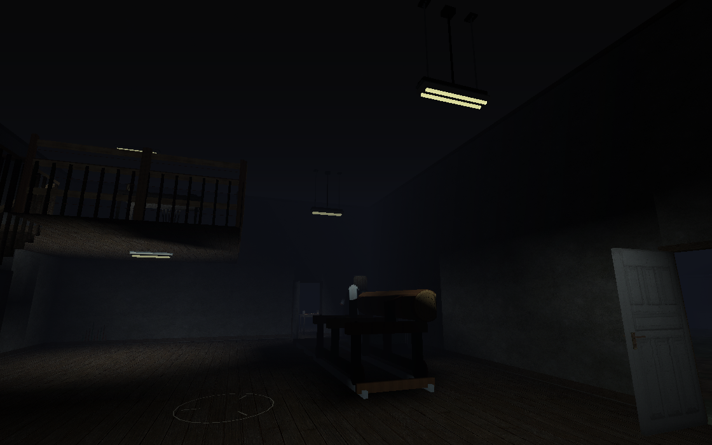
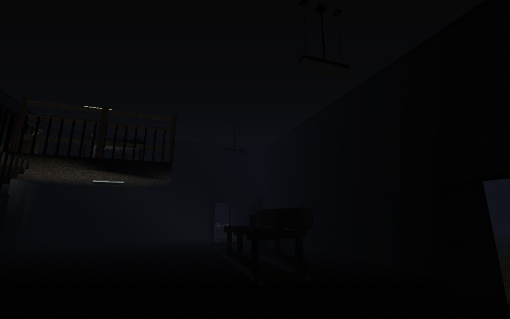
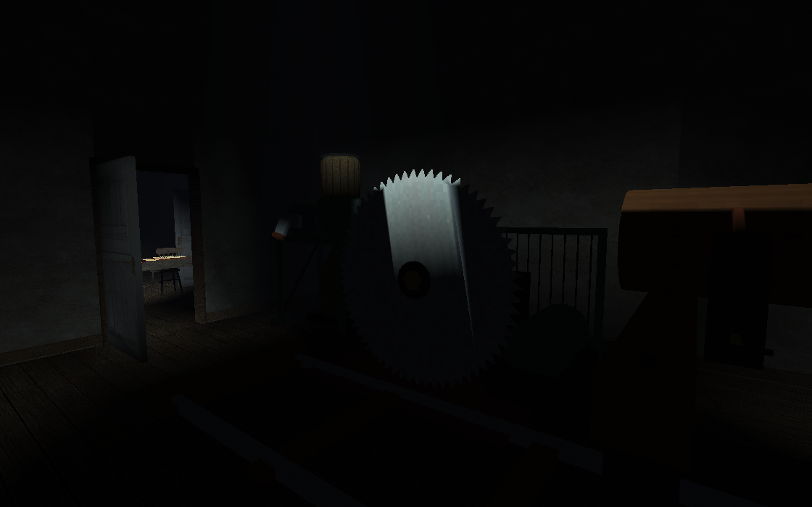
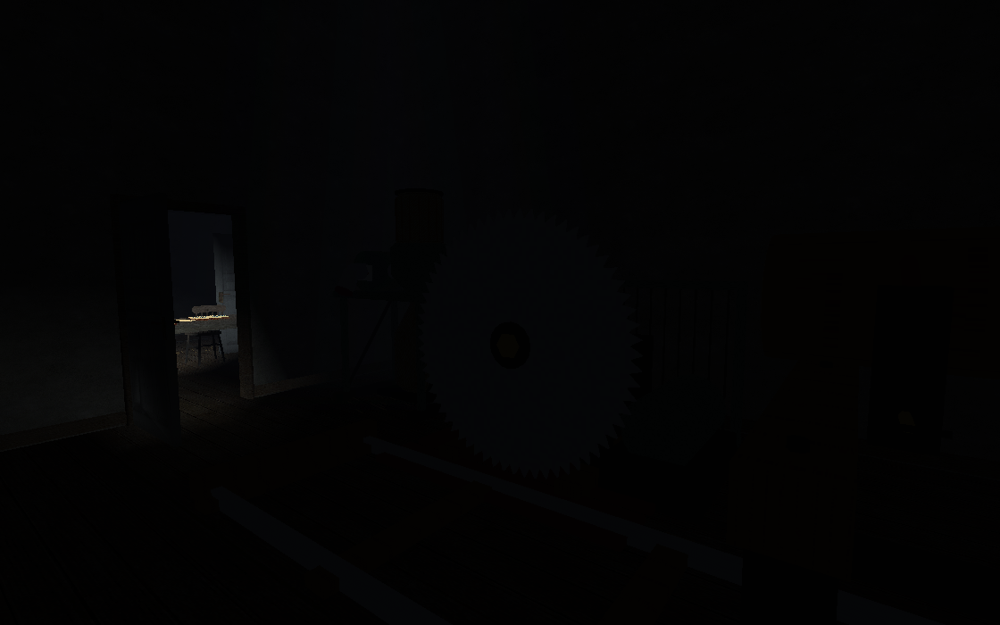
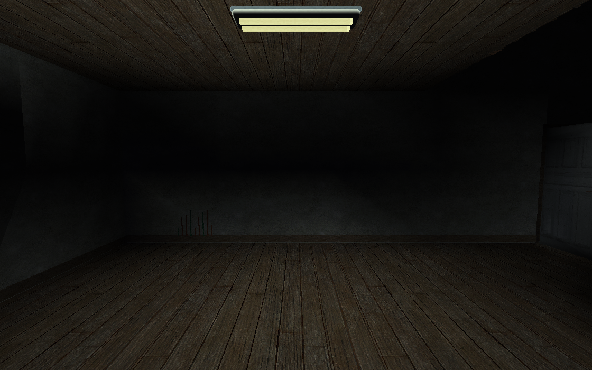
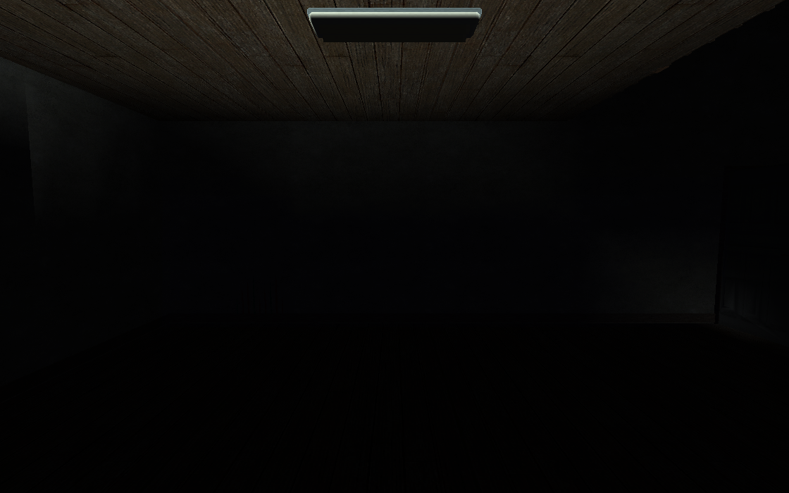
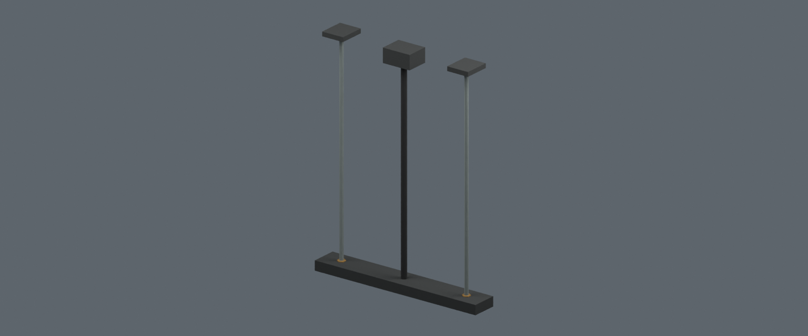

Actual standing software-renderer views. No flashlight or studio fill. Left: mill circuit on. Right: same circuit off. The inspection loft and office retain their own circuits.







Design, verification and remaining gates · Runtime report · Native report
Map remains locked. Native play, real hunt/LAN acceptance and target-hardware performance are pending.